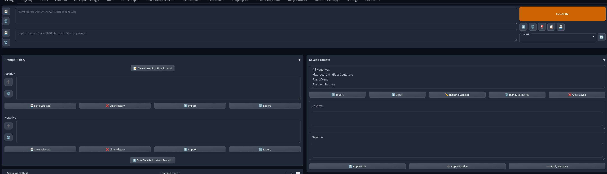

The following is a list of open source projects I've worked on over the years.
Not everything in the list is necessarily finished, may are just proofs of concept or the minimum viable product.
I build a lot of these things to get an idea out of my head, play with a new tool, or to solve my own problem.
This list excludes pull requests to other open source projects, only my own original repositories are listed
unless otherwise noted.
This list is sorted by most recent project first.
First Commit: April 6, 2024
Description
This project presents an alternate reality web browser, powered by an LLM. A search
engine provides a list of fictional websites, all of which are generated by the LLM.
Status
Completed. The project is fully functional.
First Commit: April 6, 2024
Description
This userscript was created to improve the experience of selecting samples on Strudel.cc. It reformats the list and adds filtering.
Status
Completed. The project is fully functional.
First Commit: March 26, 2024
Description
This was a proof of concept to create a virtual desktop pet with Godot. This works by
making each character/object its own window object.
Status
Completed. The project is fully functional.
First Commit: March 12, 2024
Description
This project was created for bridging Discord data into Cables.gl. A bot client connects to a Discord server and relays message
data
and metadata to a Websocket server. This data can then be received and displayed in Cables.gl to create
interactive experiences.
Status
Completed. The application is functional and is being used by the community.
A sample patch can be found here.
First Commit: January 27, 2024
Description
This server was developed as an accompanyment to the Meta Quest version of HereSphere. I collaborated with the
developer to add
support for streaming and downloading Youtube videos on standalone VR headsets, as well as the ability to
download
and manage local content
Status
Completed. The application is functional and is being used by the community.
First Commit: January 6, 2024
Description
This was an experiment to replicate the experience of the act of using a computer
resulting
in mechanical noise. I was nostalgic for how I used to be able to tell what my machine was doing based on the
sounds it was making.
Status
Completed. The proof of concept works.
First Commit: December 29, 2023
Description
This is a tool that captures a screenshot of your Linux desktop at regular intervals and
processes it with OCR. The intention is to replicate the functionality of products like Rewind.ai without the
need for an LLM or sending all of your activity to an private company.
Status
Completed. The application is running daily on my machine and has come in handy multiple
times.
First Commit: December 9, 2023
Description
This application implements a speech to text transcription service for the Neos/Resonite
virtual world platform. It also features an implementation of Google Blockly to enable end user to create
custom
voice commands with a simple graphical programming interface.
Status
Complete. This project is in use by members of the Resonite community to power everything
from
closed captioning to voice assistants.
First Commit: October 2, 2023
Description
This project was an effort to document the networking protocol used by now defunct
creative
virtual world platform Anyland. See also the Anyland archive project.
Status
Completed. All of the endpoints have been documented with cURL requests and their associated
JSON responses. Additionally a Bruno and Postman collection are available.
First Commit: January 24, 2023
Description
This is a PWA client for the Lemmy federated social network. I started this project
because
none of the existing Lemmy clients at the time fully replicated the experience I had with the Relay For Reddit
client.
Status
Proof of Concept Completed. Logging in works. You can view/save/vote on posts. You can
view/vote/create comments. It's mostly complete but needs a lot of polish.
First Commit: October 12, 2023
Description
Lenscript was a system I built to allow me to replicate the natural language
state-machine
scripting system from the now defunct virtual world platform Anyland. This project allows a developer to
create
a custom natural language syntax defined using JSON that can be implemented in any environment that supports
Javascript.
Status
Completed. The project is fully functional and includes an example for responding to browser
interactions using natural language scripting. The documentation still needs to be overhauled.
First Commit: September 8, 2023
Description
This application was built to provide an improved script manager experience in the
virtual
world platform Overte. It supports starting/stopping scripts as well as bookmarking scripts for ease of
access.
Status
Completed. This project is fully functional and is available through the in-world app store.
First Commit: September 18, 2023
Description
This application was built to provide an improved debugging experience in the virtual
world platform Overte. It supports keyword and type filtering.
Status
Completed. This project is fully functional and is available through the in-world app store.
First Commit: September 18, 2023
Description
This application was built to provide a simple way for users to get their content into
the
virtual world platform Overte. Since Overte requires a web server, this project gives you a simple interface
for
uploading files that can be hosted for free on Glitch.io
Status
Completed. This project is fully functional and is in use by some community members.
First Commit: July 25, 2023
Description
This userscript allows a user to filter out certain keywords from their feed on the Lemmy
federated social network.
Status
Completed. This project is fully functional and is in use by myself and others.
First Commit: July 23, 2023
Description
This was a project I built to remove my dependency on Spotify. This pipeline automates
the
process of downloading local MP3 copies of my most recent reccomendations from Last.FM and Spotify, which is
then added to my library for manual playback in Navidrome and my Azuracast radio station.
Status
Completed. This project is fully functional and grabbing new tracks every Monday.
First Commit: February 27, 2023
Description
This is an extension for the Stable Diffusion Automatic1111 WebUI (and derivates) that
provides a simple interface for viewing notes for assets in your model library. There's also an accompanying
Python script that downlolads all of the metadata for every asset from CivitAI.
Status
Completed. This project is fully functional and is used regularly.
First Commit: March 28, 2023
Description
This is a fork of an existing extension for the Stable Diffusion Automatic1111 WebUI. I
included this fork in this list as I made quite a few modifications in the effort of performing weight
relationship analysis. This included adding functionality to built a pickle that contains the weight vector
for
every token in the stable diffusion tokenizer. Additionally you can visually map the relationship between one
or
more tokens to aid in tweening and fine-tuning embeddings.
Status
Completed. The functionality is present and I had a lot of fun turning cats into rats
without
prompting.

First Commit: March 27, 2023
Description
This is an extension for the Stable Diffusion Automatic1111 WebUI (and derivates) that
provdes a more robust interface for prompt management and sharing. It provides functionality for prompt
history
and bookmarking, as well as the ability to import and export prompts as JSON.
Status
Completed, but deprecated. The functionality addon is fully functional, but has been broken
by
newer versions of the A1111 UI. There are alternative extensions now tha that provide this functionality.
First Commit: January 29, 2023
Description
This is a full implementation of a MUD (multi-user-dungeon) implemented with Discord. The
project includes a tool to convert CirlceMUD and DikuMUD compatible worlds, NPCs, and items into a modern JSON
format for use with DisMUD. Internally entities are built with the BitECS framework to allow for extensible
and
highly dynamic interactions.
Status
Mostly completed. Everything short of combat has been implemented.
First Commit: November 23, 2022
Description
This is a hosted text to speech service for the Neos/Resonite virtual world platform. The
original TTS project that was widely used was hosted on the free Heroku tier by Tessacoil, that tier was
removed
in late 2022. I developed this fork to take over the project and keep it running.
Status
Complete. The server remains online despite me no longer actively using Neos or Resonite. I
intend to keep it online indefinitely.
First Commit: November 5, 2022
Description
This is a locally hosted text to speech system for the Neos/Resonite virtual world
platform. This project uses both Google TTS and a OS provided TTS engine. This was built as a private
alternative to the hosted solution.
Status
Complete. The application is fully functional and is in use by members of the community.
First Commit: January 11, 2023
Description
This was a Discord bot to monitor the status of the ChatGPT website, which at the time
was
experiencing intermittent downtime. This was created for the ChatGPT discord server.
Status
Deprecated. ChatGPT no longer suffers from downtime, and the addition of the Cloudflare
captcha renders this no longer functional.
First Commit: January 11, 2023
Description
This is a browser extension that bridges the ChatGPT browser interface to a websocket
server. The idea was to enable free and easy API access to the ChatGPT model without having to go through the
headache of standing up an automated browser instance and trying to bypass the Cloudflare bot protection. At
the
time there was no API access generally avaialable.
Status
Deprecated. ChatGPT now offers a proper API interface with reasonable pricing.
First Commit: June 22, 2020
Description
This was a helper library to automatically setup controller models and button mappings
for
the browser WebXR API.
Status
Deprecated. Native mapping support is now much better managed by the WebXR API and
supporting
libraries.
First Commit: September 2, 2022
Description
This server is meant to provide a full physics engine for the creative virtual world
platform Neos/Resonite. The physics engine runs locally and forwards the state of all objects to a Neos
rendering client via websockets. There is also a Three.js based viewer implemented for debugging collision
geometries.
Status
Incomplete. The server and browser interface are complete. I ran into issues with Neos and
its
websocket client when it came to the frequency of simulation updates.
First Commit: August 20, 2022
Description
This is a mod for the creative virtual world platform Neos/Resonite. It implements an
HTTP
web server and a Websockets server into the VR client. This can be used to serve local copy of web apps rather
than relying on a third party host and removes the need for a hosted websocket server. This mod is largely
targeted at developers who are interested in ensuring the backends for their web-enabled objects in-world can
stand the test of time.
Status
Complete. There's also the start of a tool to enable the distribution of complete webapps as
in-world VR objects.
First Commit: May 28, 2021
Description
This is an implementation of a QR code reader for use with the virtual reality overlay
tool, OVRToolkit. This tool was intended to allow for the spatial anchoring of overlay windows in a virtual
environment using a QR code as a reference point.
Status
Incomplete. I worked with the OVRToolkit developer, but we ran into commercial licensing
issues with the C++ library we intended to use.
First Commit: October 3, 2023
Description
This is an archive of the now defunct virtual world platform Anyland. This archive
includes all public world data available from before the shutdown. There is an ongoing project to recreate the
server software allowing for single player exploration.
Status
Complete
First Commit: May 26, 2020
Description
This was a tool for creating a 3D model of your real world environment for use in a
virtual world. By tracing an outline of your environment it creates a skeleton that can be used to flesh out a
3D model.
Status
Complete
First Commit: May 6, 2019
Description
This was an attempt at building a clone of the virtual world platform Anyland in WebXR.
Status
Abandoned. I ended up going down a rabbit hole of making GPU shader instanced meshes track
with their physics engine counterparts. Moved onto other projects afterward.
First Commit: July 13, 2016
Description
This userscript was created to export a list of portals from Ingress into a CSV, which at
the time were a 1:1 match to Pokestops in the recently released Pokemon Go game.
Status
Complete. Not sure if it still works today, but this served its role at the time. There are
now more complete services serving this role.
First Commit: October 4, 2020
Description
This project integrated the $P gesture recognition engine with WebXR, allowing for simple
training and recognition of physical gestures in XR.
Status
Complete
First Commit: March 14, 2020
Description
This is a wrapper around the OVRToolkit JS API, simplifying the interface and making it
better conform to Javascript conventions.
Status
Complete
First Commit: August 6, 2019
Description
This tool intercepted the SteamVR finger tracking data and forwarded it to a websocket,
for use in the Anyland virtual world. This data enabled the creation of gesture controls within Anyland.
Status
Complete
First Commit: May 17, 2019
Description
This was a Discord bot that was used to follow the Anyland Discord server from within the
Anyland virtual world platform.
Status
Complete. Anyland is now shut down.
First Commit: Feb 13, 2013
Description
This was a NodeJS server that was used to record and playback gesture data from the Leap
Motion controller. This was used to develop Webleap at the time we only had a single prerelease developer kit.
Status
Complete
First Commit: July 23, 2014
Description
This was a web extension that allowed for gestured based browser navigation using the
Leap Motion controller.
Status
Complete
First Commit: December 8, 2016
Description
This was a project to replace the Pebble Appstore after the company shut down operations.
This project eventually went on to become the foundation for the Rebble appstore which is still operating
today.
Status
Complete. This has since been migrated to the Rebble organization.
First Commit: November 8, 2014
Description
This was an attempt at creating an AI assistant that could be commanded using natural
language via speech to text.
Status
Deprecreated. This was functional, but Wit.ai no longer offers the same API. Now LLMs can do
a better job of offering this capability.